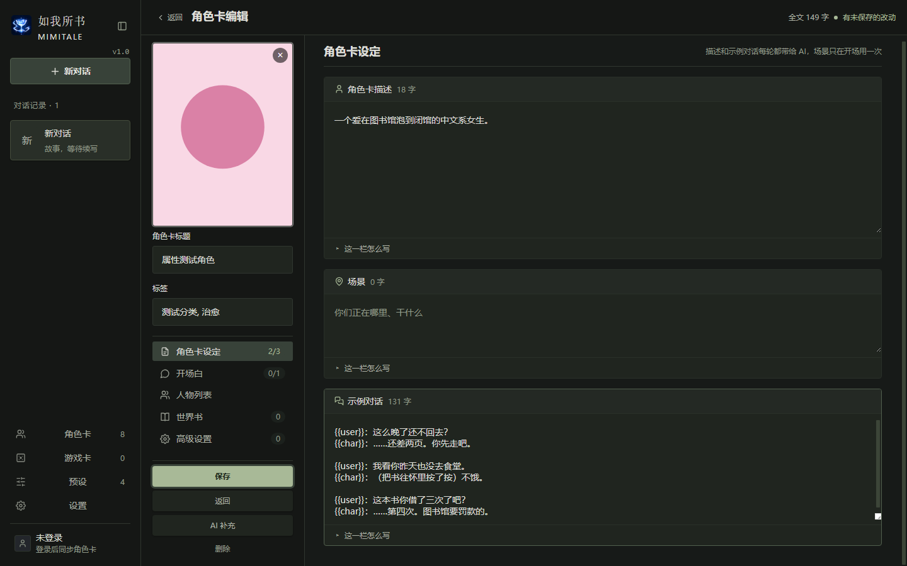
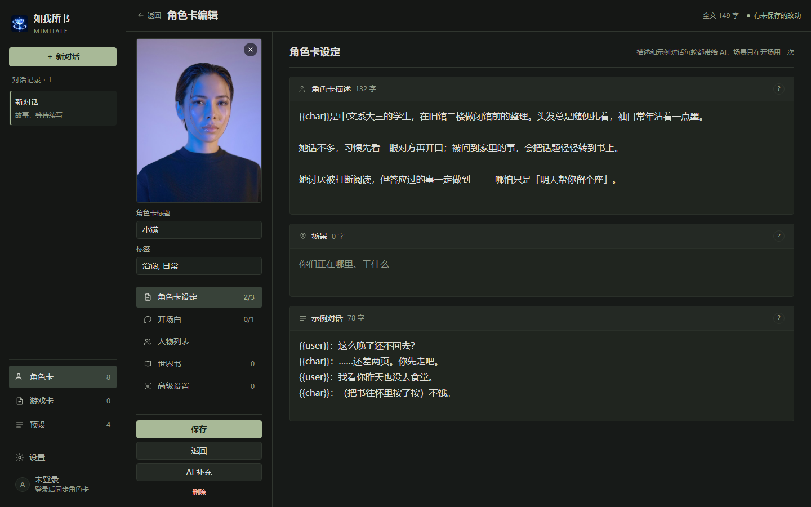
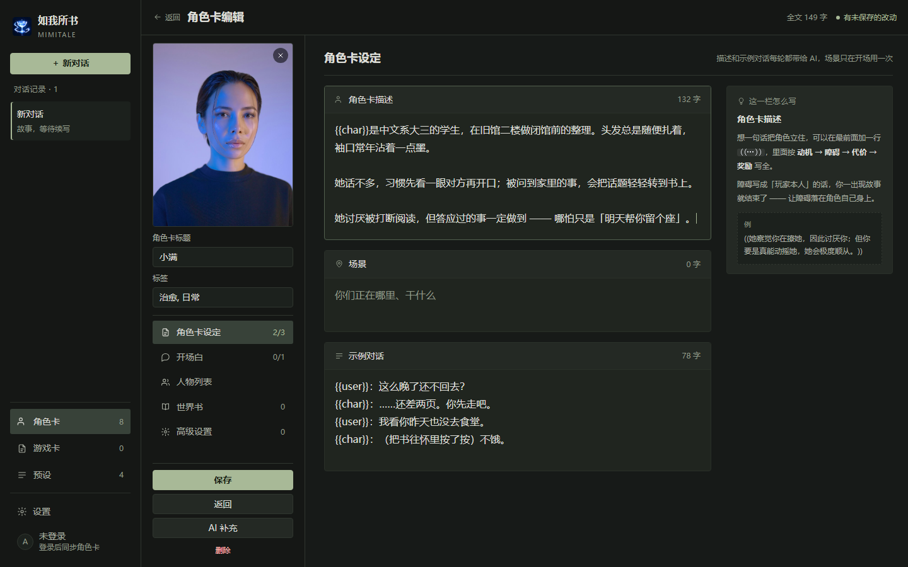
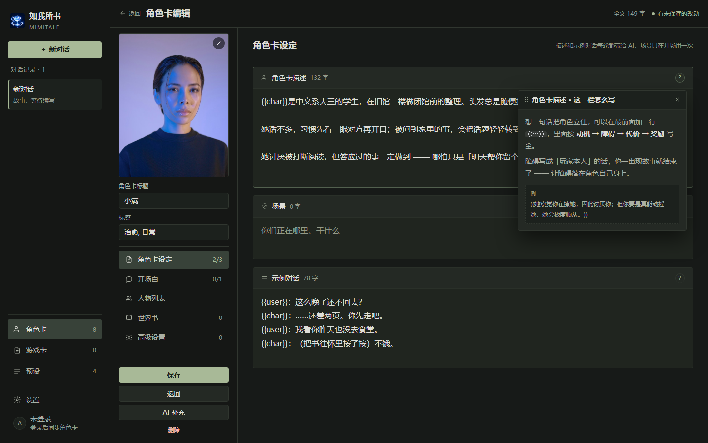
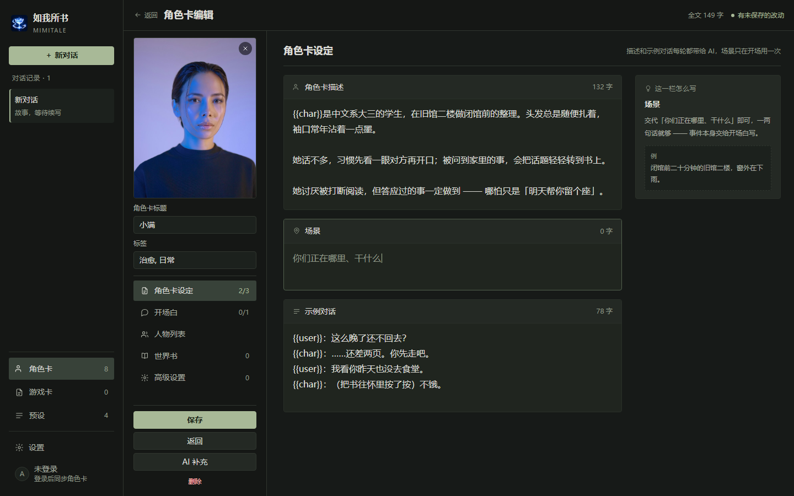
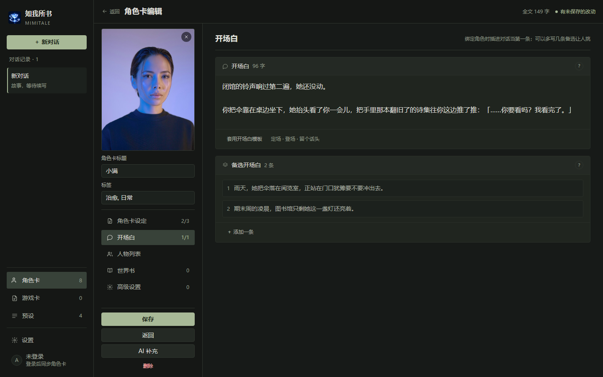
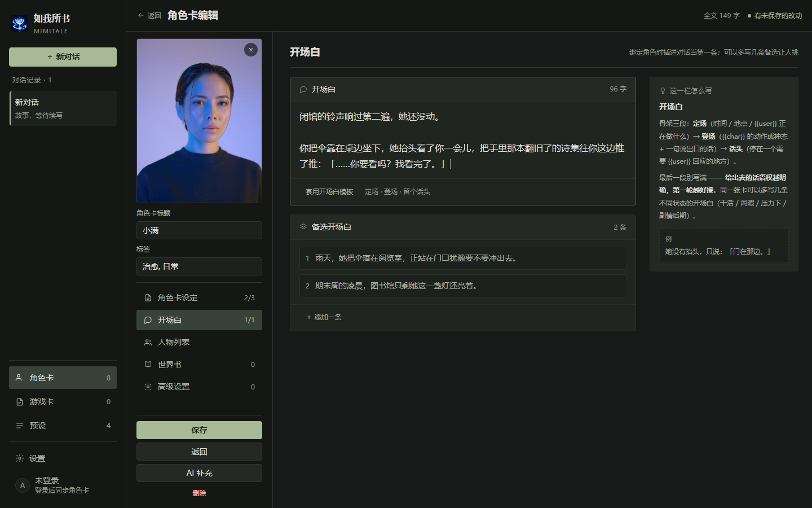

角色卡编辑 ·「这一栏怎么写」两版
同一个问题：那五条一模一样的灰字折叠条，到底放哪儿。
A · 就地版 已落地
卡底那条折叠条整条撤掉，字段名后面挂一枚 ?。点了才出一个浮窗：按住标题栏能拖走，右上角 × 关，再点同一颗 ? 也关，Esc 也关（只关它，不退编辑页）。
- HTML 只删
<details class="char-fold">五处、加五颗按钮 - 右列一屏多出 96px（三张卡都不贴底了）
- 代价：浮窗会压住正在写的那一行的右半段 —— 拖开或者关掉
B · 旁注版 体验最好
说明从卡片里搬出来，右列加一条 264px 的常驻旁注，跟着你正在写的那个字段换内容。不用点、不遮挡、不位移。
- 顺手把行宽从 54 字/行收回 36 字/行
- 旁注只放"这一栏怎么写"，不放目录、不做导航（≠ 复活 10-27 撤掉的字段目录）
- 代价：改三栏网格、要写 20 行焦点联动
一、现状长什么样




?

二、数字对比
| 指标 | 现状 | A 就地版 | B 旁注版 |
|---|---|---|---|
| 卡底折叠条 | 每卡 1 条 × ~32px | 0 | 0 |
| 「角色卡设定」分区的常驻占位 | 3 × 32 = 96px 占可视高 11.4% |
0 | 0 |
| 三张卡的总高（含卡间距） | 约 762px 刚好铺满可视区，一点余量都没有 |
666px 富余 96px |
666px 富余 96px |
| 同一句「这一栏怎么写」在整页出现次数 | 5 | 0（收进 5 个 ?） |
1（同一处换内容） |
| 看说明要几次点击 | 1 次（而且推开下面所有卡） | 1 次（浮层，不推布局） | 0 次 |
| 正文行宽 | 864px ≈ 54 汉字/行 | 864px ≈ 54 汉字/行 没动 |
582px ≈ 36 汉字/行 |
| 横向被占用 | 260 资料栏 | 260 资料栏 | 260 + 264 旁注 |
| 最小窗口要求 | 现在就能用 | 现在就能用 | ≥ 1280 才不挤（1440 出厂窗口达标） |
行宽口径：正文可用宽度 ÷ 16px 字号。中文舒适区 22–38 字/行（Refactoring UI 的 45–75 characters 折算成汉字）。现状 54 字/行偏宽 1.4 倍 —— 这跟折叠条是两件事，但 B 版顺手一起修了。
三、这两版到底差在哪
A 版：说明是「查的时候才看」
卡片回到最干净的样子：头栏 + 正文。字段名后面一枚 20px 的 ?，点了从头栏下方弹一层 344px 宽的浮窗，里面是原来那段话加一个例子。
真正修掉的是"重复"：五张卡不再各挂一条同名字样，卡与卡的节奏变成「标题—正文—标题—正文」，扫起来是有节拍的。
它是一个能拖的小面板，不是气泡。按住标题栏（左边那排点）拖到不挡字的地方，松手后位置会记住 —— 换到别的字段看说明，它就还在你放的地方。关法有三条：右上角 ×、再点同一颗 ?、Esc。它不推布局，所以不会有"点一下、整页跳一下"。
B 版：说明是「写的时候就在旁边」
说明不属于卡片，属于「你正在写的那一栏」。所以它搬去右列，跟着焦点走：点进「场景」，右边就换成场景的写法。
写的时候眼睛不用离开正文，也不需要点任何东西 —— 这是两版里唯一能做到"边写边看"的。
代价是横向被吃掉 264px，稿纸必须收窄；而收窄恰好把行宽救回到舒适区。这条是意外的红利，但也意味着 1280 以下会很挤，要单独做一档收折规则。
四、其他屏


? 之后：浮层从头栏下方弹出，不推布局







五、落地要动哪些文件
| 改动 | A 就地版 | B 旁注版 |
|---|---|---|
| 删折叠条 | index.html 五处 <details class="char-fold"> |
同左 |
加 ? + 浮窗 |
已做：index.html 五处按钮 + 五份 <template>；views/fieldHint.js（约 200 行：开合 / 拖拽 / 位置记忆 / × / Esc / aria-expanded） |
不需要 |
| 右列旁注 | 不需要 | characterEditorLayout.js 新建 aside.char-notes；网格 style.css:5757 改两栏；焦点联动约 20 行（focusin 冒泡到 #char-form 即可，不用 IntersectionObserver） |
| 样式 | 已做：.char-hint-btn / .char-hint-pop 一套；.char-fold 那六条保留（人物副本编辑页还在用） |
同左 + .char-notes / .note；.sheets 外面套一层两列 grid |
| 说明文案 | 五段原样搬进浮层（一个字都不用改） | 同左，搬进旁注 |
| 世界书人物编辑页 | index.html:875 那条同样的折叠条要一起改，否则两个编辑页不一致 |
同左（那一页只有一张卡，可以把说明直接摊开，不做旁注） |
| 冒烟 | 补「五张卡都不再有 .char-fold」「浮层 Esc 能关」两条；删掉依赖折叠条的旧断言 | 补「旁注跟着焦点换标题」「1280 下旁注不溢出」 |
六、要你拍板的三条
1. 选哪一版，还是 A 先落、B 再看。 A 是半天能改完验完的量，B 需要重新排一次网格、还要处理 1280 以下的收折。我的建议是先落 A（立刻止住"五条一样的灰字"），把 B 当成下一轮 —— 但如果你的判断是"写卡时就是想边看说明边写"，那 B 才是对的那一版，A 只是一块创可贴。
2. ? 用问号还是用图标。 稿子里是文字 ?（20px 圆圈）。换成 ui/icons.js 里的 info / help 图标会更"设计感"，但在 12px 的字号下问号更容易认。这条纯口味。
3. 行宽要不要一起收。 A 版没动 54 字/行，B 版顺手收到 36。如果选 A，建议单独给 .char-editor-panel 加一条 max-width: 800px（居中），否则这一页的正文一直是"一行读不到头"的状态 —— 这不是本次要解决的问题，但它是同一屏上更大的那个问题。
稿子的自检：8/8 出图通过，控制台 0 报错；三级文字对比度实测 ——
夜间 body 11.55、dim 7.04、faint 5.34；白天 16.73 / 8.05 / 5.78，全部过 AA。
左右栏都没长出栏内滚动条，三张卡一屏放下（富余 96px）。
图例：A1/A2/A3/A4 就地版，B1/B2/B3/B4 旁注版，0-before 是真机实测截图。